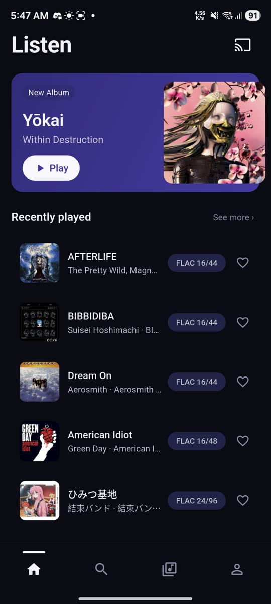
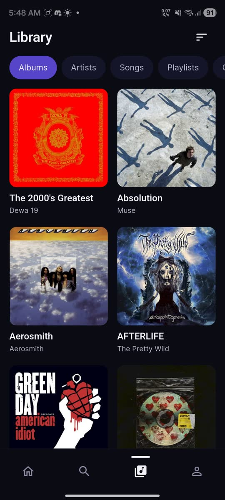
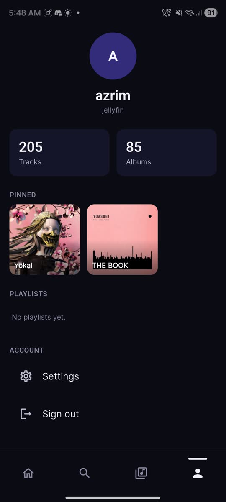
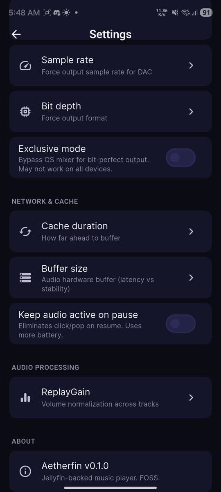

Your music. Your server.
No compromises.
Aetherfin streams from your self-hosted Jellyfin or Navidrome server and decodes everything on-device with libmpv. FLAC, ALAC, OPUS, WAV — bit-for-bit. No transcoding, no telemetry, no cloud.
Android 7.0+ · Jellyfin 10.8+ or Navidrome 0.49+
Everything you need, nothing you don't
A premium music experience that happens to be open source.
Real-time visualizer
64-band FFT spectrum from actual audio output, rendered at 60 fps. No microphone permission needed.
Gapless playback
libmpv pre-fetches the next track in the background. Seamless album-side transitions.
86-effect DSP rack
18-band EQ with presets, compressor, echo/delay, phaser, flanger, chorus, pitch shift, loudness normalization, and more. Master bypass switch.
Synced lyrics
LRC parsed on-device with auto-scrolling highlight. Displayed on your lock-screen too.
Jellyfin + Navidrome
Works with both servers out of the box. Auto-detects server type during setup. mDNS discovery for LAN servers.
Bit-perfect output
Force sample rate, bit depth, exclusive mode. Lossless FLAC, ALAC, OPUS, WAV — no quality loss.
Sleep timer
Presets from 5 to 60 minutes, plus an "end of track" mode that pauses when the current song finishes.
Privacy first
No analytics. No ads. No trackers. No Aetherfin servers. The app talks only to the server you configure.
A glimpse
Spectral colors from your cover art. Premium typography. Quiet motion.




Three steps to music
-
1
Download the APK
Grab the latest release. Universal APK works everywhere, per-ABI builds are smaller.
Latest release → -
2
Connect your server
Enter your Jellyfin or Navidrome URL. mDNS auto-discovers servers on your LAN. VPN and public HTTPS work too.
-
3
Sign in and play
Tracks stream as raw bytes — no server-side transcoding. Your server's CPU stays cool.
Your music deserves better.
No cloud middleman. No subscription. No analytics. Just a polished player that respects your library and your privacy.
Download Aetherfin